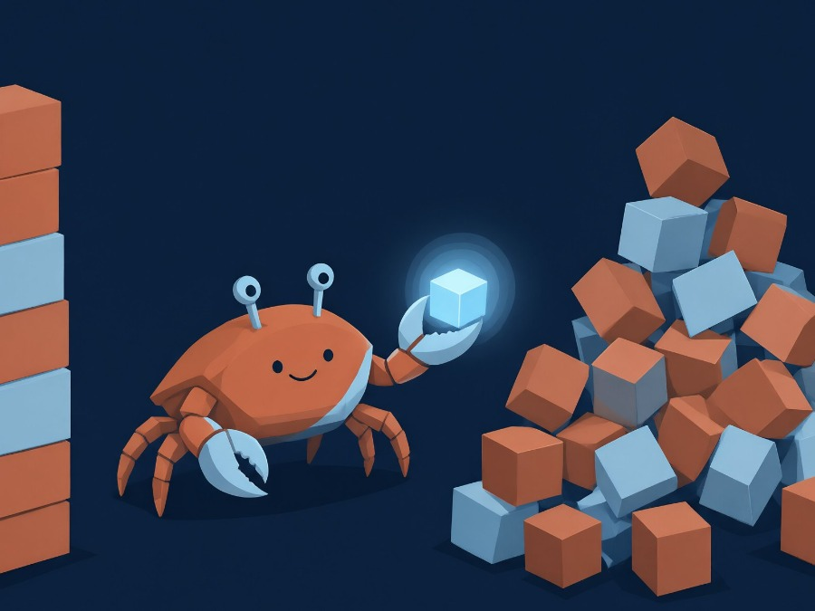

Rust — документация языка
Краткий справочник по языку Rust - системному языку программирования.

Почему стоит выбрать Rust
- Производительность. Компилируемый язык без рантайма и сборщика мусора — уровень C/C++.
- Безопасность памяти. Система владения (ownership) отлавливает гонки данных и висячие указатели на этапе компиляции.
- Бесстрашный параллелизм. Компилятор не даст разделить изменяемые данные между потоками.
- Cargo. Встроенный пакетный менеджер и система сборки «из коробки».
Первая программа
Классический пример — файл main.rs, сборка и запуск одной командой cargo run:
fn main() {
println!("Привет, мир!");
let lang = "Rust";
let year = 2026;
println!("{} в {} году — отличный выбор!", lang, year);
}Как читать этот справочник
| Блок | Что делает |
|---|---|
| Разделы «Начало работы» | Установка тулчейна и базовый синтаксис |
| Разделы «Основы» | Переменные, типы, функции, управляющие конструкции |
| Разделы «Владение» | Главная особенность Rust: ownership, заимствование, срезы |
| Разделы «Типы данных» | Структуры, перечисления, коллекции, дженерики и трейты |
| Разделы «Практика» | Ошибки, модули, шпаргалка по синтаксису |
Совет. Каждый пример можно скопировать и запустить локально:
cargo new example && cd example, вставить код в src/main.rs, затем cargo run.
Интерактивно — в онлайн-песочнице play.rust-lang.org.
Ключевые моменты
- Rust сочетает скорость C/C++ с гарантиями безопасности на этапе компиляции.
- Основа языка — система владения, ей посвящены два раздела справочника.
- Все примеры компилируются стабильной версией Rust (stable).